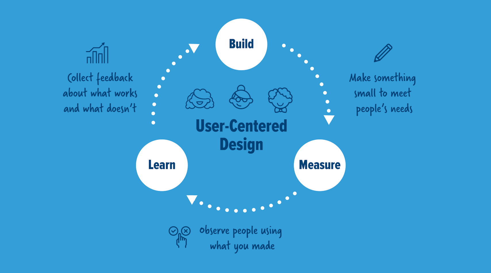
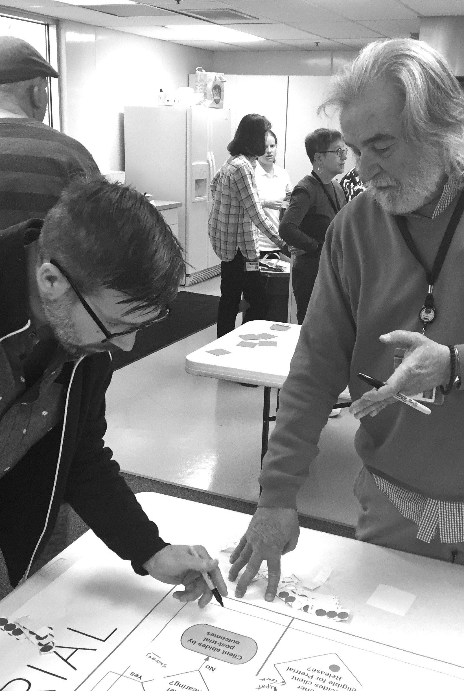
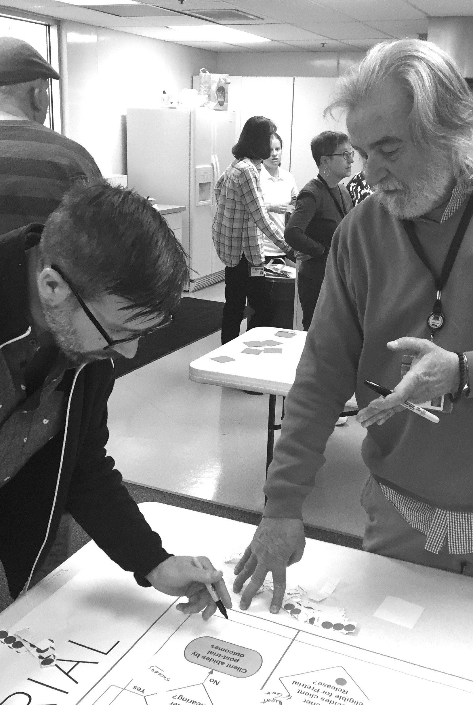

Methodology
Code for America approaches development in cycles of: building a thing, measuring it use and from that learning what to build next. These cycles happen over the length of our project, and includes smaller concurrent cycles. This methodology differs from traditional waterfall software development, whereby the entire scope is outlined and schedule before development begins. Such processes divorce the engineering from the research and analysis.
Prior to any build cycle in our process, we engaged in a "learning" period to make sure we were pointed in the right direction as we developed. Specifically, this achieved familiarizing ourselves with the field and ensuring we understood the environment within which we were operating.
User-Centered Design
Learn observe what works and what needs to change
Build make small things to meet the needs of clients
Measure collect data on how people use what you made and its impact on the system
Expanding on the Cycle
Working in short development cycles allows us to develop from a bottom-up approach. That is, through early delivery, we encourage and engage the voices of real users of the tool. These voices shape our path toward addressing the problem we are tackling. Rather than convincing management of why something should happen, we pivot the conversation to how we should continue harnessing the observed gains or losses of a core concept implementation.
This opens the development process up to direct users. Such users have an expert knowledge of what would improve their work, mediating the traditional hierarchy of such procurement efforts and allowing such end user expertise to rise, as it were, to the top.
Home / User Research
 
